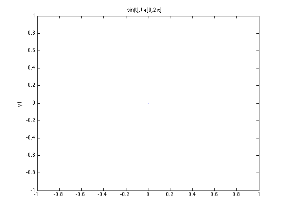

A = [1 2; 3 4];
B = [2 -1; 0 1];
v = [0 0 1];
C = A*B;
D = A.*B;
vT = transpose(v);
y = zeros(1,10);
for i=2:2:10
y(i) = pi;
end
y([2:2:end]) = pi;
z1 = 2*exp((pi/6)*j);
z2 = j-1;
imag(z1);
real(z1);
imag(conj(z2));
real(conj(z1));
imag(z1*z2);
real(z1*z2);
imag(z1/z2);
real(z1/z2);
abs(conj(z1));
angle(conj(z1));
abs(z2);
angle(conj(z2));
abs(z1*z2);
angle(z1*z2);
abs(z1/z2);
angle(z1/z2);
t = 0:2*pi;
y1 = sin(t);
y2 = t.^2 + cos(t) + exp(t.^2)/(10.^16);
plot(t,y1,'r');
title('y = sin(t)');
xlabel('t');
ylabel('y');
plot(t,y2)
title('y = t^2 + cos(t) + e^(t^2)/(10^16)');
xlabel('t');
ylabel('y');
subplot(2,1,1);
plot(t,sin(t),'r');
ylabel('y = sin(t)');
subplot(2,1,2);
plot(t,t.^2 + cos(t) + exp(t.^2)/(10.^16));
axis([0,2*pi,0,5]);
xlabel('t'); ylabel('y = t^2 + cos(t) + e^(t^2)/(10^16)');
n = -10:10;
plot(n, sin(2*pi*(n/10)));
title('y3(n) = sin(2*pi*(n/10))');
xlabel('n');
ylabel('y');
[y,Fs] = audioread('Dolly.wav');
soundsc(y,Fs);
[y] = audioread('Dolly.wav');
soundsc(y,16000);
[y] = audioread('Dolly.wav');
soundsc(y,32000);
A = imread('Lena.jpg');
image(A), axis image, axis off;
IM2 = imcomplement(A);
image(IM2), axis image, axis off;
